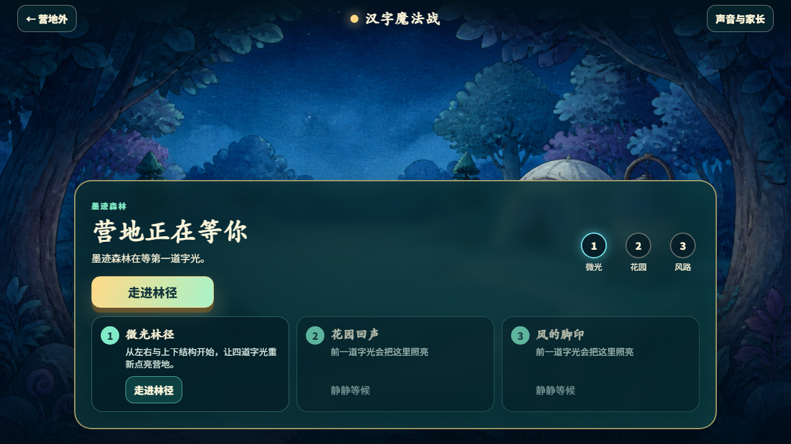
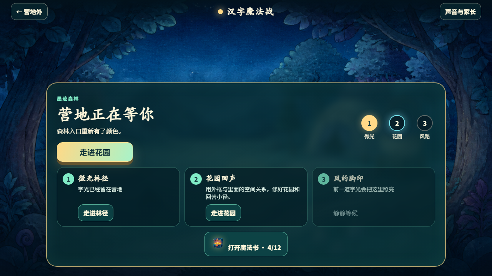
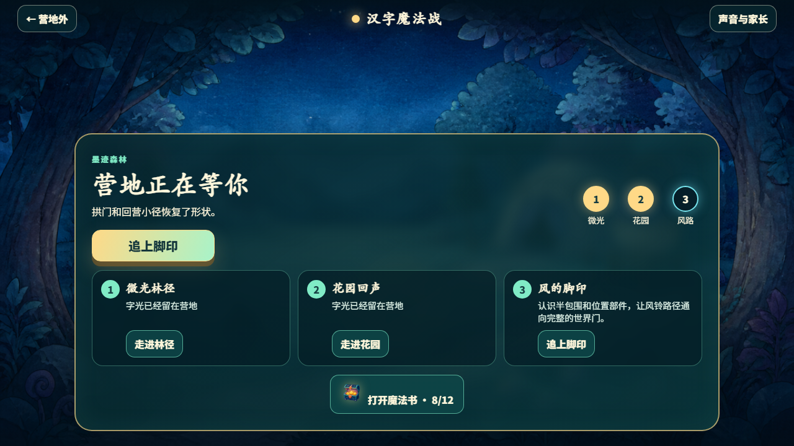
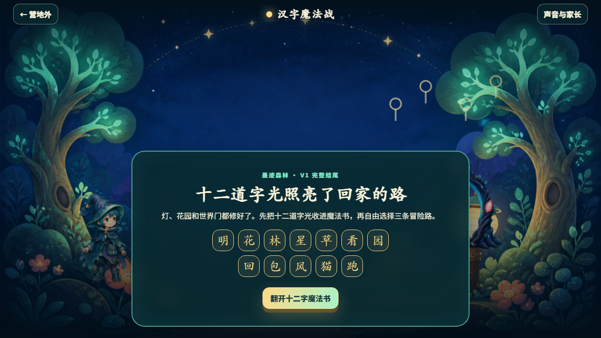
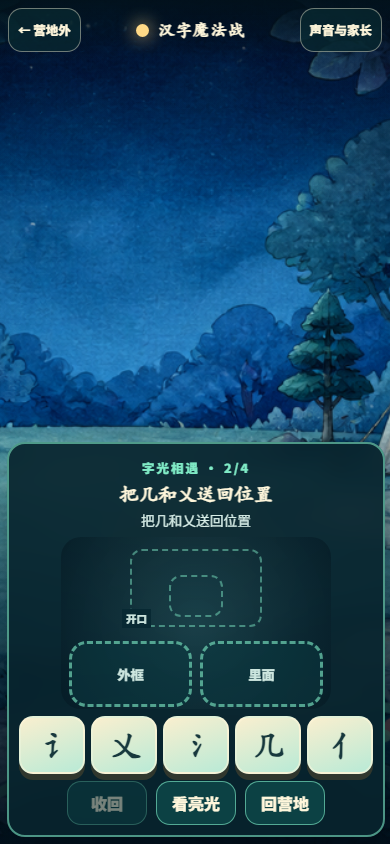

V1.0.0 已通过机器审核并可直接玩
PASS_MACHINE / V1_MACHINE_COMPLETE / HANZI_MAGIC_BATTLE_V2_V1_PLAYABLE_READY
12/12 汉字、3/3 冒险、24/24 运行时素材、8/8 浏览器实玩。真实儿童验证：NO_BY_USER_DIRECTION。
Source tree SHA-256: 90F3F99F26C3724972175CD58E4657BE3A26F5E83434AA62B4753655833AE6E2
三章流程
营地微光林径：明花林星修复灯花园回声：草看园回修复花园风的脚印：包风猫跑修复世界门十二字魔法书与自由冒险
12 字逐字状态
| # | 字 | 拼音 | 熟悉词 | 短义 | 章节 | 结构 | 状态 |
|---|---|---|---|---|---|---|---|
| 1 | 明 | míng | 明亮 | 有光、看得清楚 | 微光林径 | left-right | PASS |
| 2 | 花 | huā | 花朵 | 植物开放的花 | 微光林径 | top-bottom | PASS |
| 3 | 林 | lín | 树林 | 许多树长在一起 | 微光林径 | left-right | PASS |
| 4 | 星 | xīng | 星星 | 夜空中发亮的星 | 微光林径 | top-bottom | PASS |
| 5 | 草 | cǎo | 小草 | 地面上生长的草 | 花园回声 | top-bottom | PASS |
| 6 | 看 | kàn | 看见 | 用眼睛发现事物 | 花园回声 | top-bottom | PASS |
| 7 | 园 | yuán | 花园 | 种花木的园地 | 花园回声 | full-enclosure | PASS |
| 8 | 回 | huí | 回家 | 返回原来的地方 | 花园回声 | full-enclosure | PASS |
| 9 | 包 | bāo | 书包 | 装东西的包 | 风的脚印 | semi-enclosure | PASS |
| 10 | 风 | fēng | 大风 | 流动的空气 | 风的脚印 | semi-enclosure | PASS |
| 11 | 猫 | māo | 花猫 | 常见的小动物猫 | 风的脚印 | left-right | PASS |
| 12 | 跑 | pǎo | 跑步 | 快速向前移动 | 风的脚印 | left-right | PASS |
8 条机器实玩
| 路径 | 输入 | 关键动作 | 结果 |
|---|---|---|---|
| P1 | mouse | hub → three adventures → three repairs → 12-character spellbook → ending → free adventure | PASS |
| P2 | mouse | exit before adventure-two boss → reload → safe encounter resume → stage-one retained | PASS |
| P3 | mouse | mute → reduce motion → complete chapter → compare deterministic outcome | PASS |
| P4 | touch | portrait → tap card and slot → full enclosure → semi enclosure → overflow gate | PASS |
| P5 | keyboard | Tab → ArrowRight → Enter → Space → boss modal input gate → complete chapter | PASS |
| P6 | mouse | invalid one → invalid two → gentle copy → slot hint → no auto-solve → recover | PASS |
| P7 | mouse | inject malformed → capture recovery → preserve primary → inject checksum mismatch → safe fresh state | PASS |
| P8 | mouse | free adventure → replay three chapters → different abilities → three visible effects → 12-character ceiling | PASS |
关键截图






能力、存档、网络与隐私
- 守护微光、星路引导、墨迹回声均在三章首领状态中真实触发，且报告同时验证 triggered / visible / stateVerified。
- schema v4 延续 canonical localStorage key；v3 与 STEP02 可迁移；checksum、backup、recovery、future-version read-only 均通过。
- P1–P8 的 consoleErrors、pageErrors、externalRequests 均为空；不上传姓名、语音、照片、自由文本或使用记录。
- 已验证静音、减少动画、触控、鼠标、键盘与 360×800、768×1024、1024×768、1280×720 几何。
非阻断 backlog
- speechSynthesis 的具体中文音色取决于本机；缺失时游戏仍可完整操作和理解。
- 机器证据不证明儿童喜欢、学会、保持或愿意再次进入；用户已明确把真实 Second-Use 从本次 V1 完成门禁中撤销。